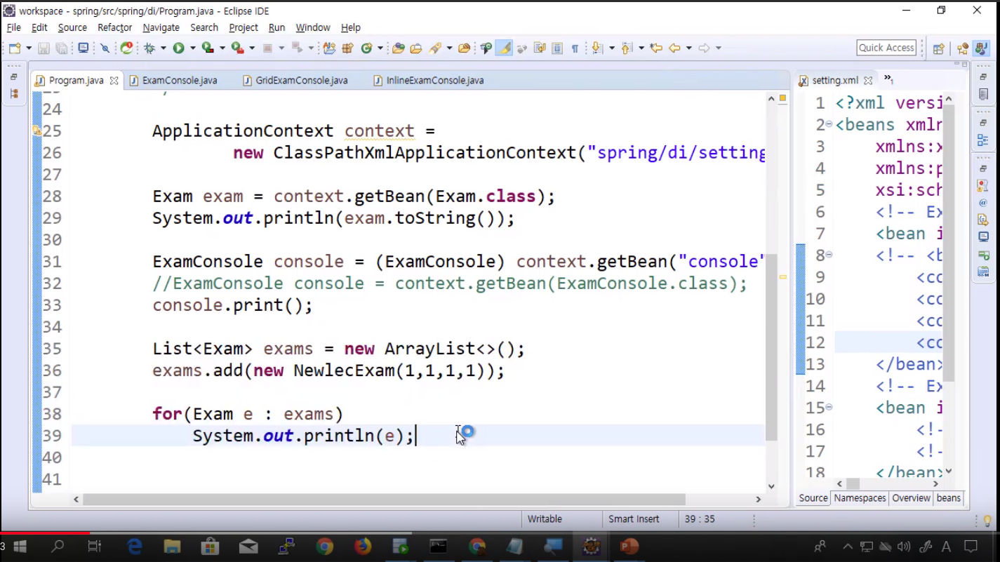
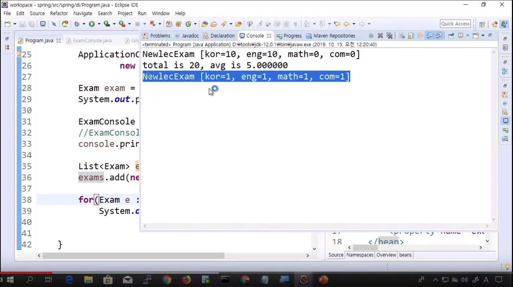
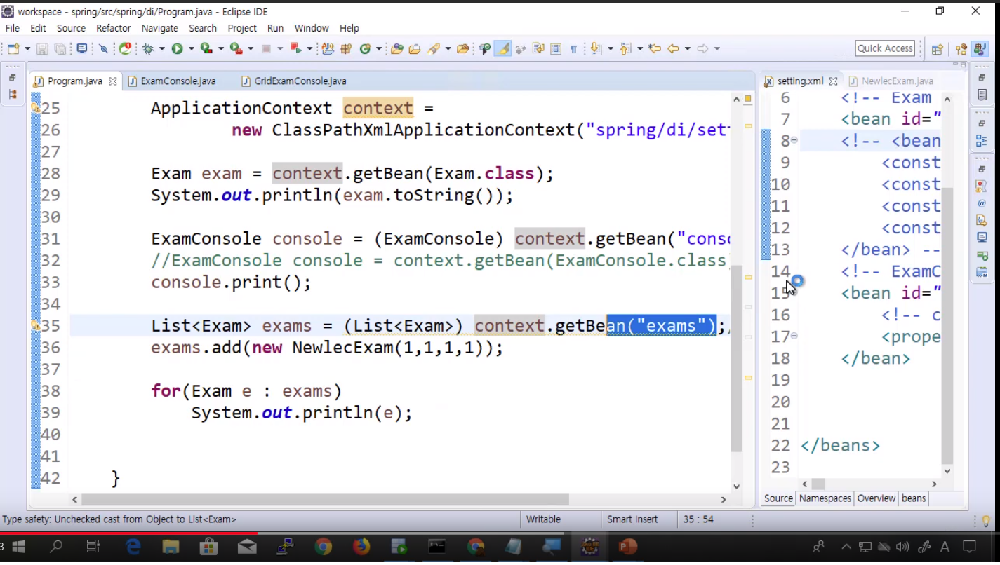
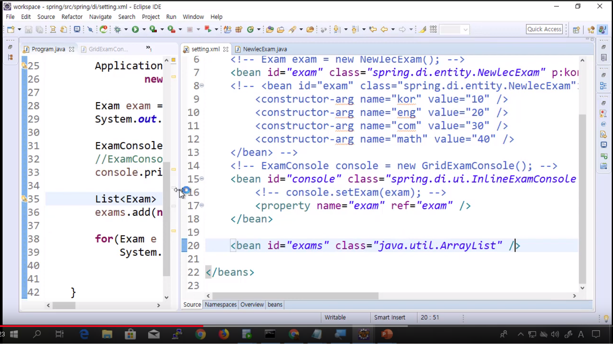

This is personal study note
Copyright and original reference are from:
www.youtube.com/watch?v=0ktRT5Fatnw
스프링 프레임워크 강의 11강 - 콜렉션 생성과 목록 DI
스프링_프레임워크_강의_11강_콜렉션_생성과_목록_DI
================================================================================
- 스프링을 이용해서 객체를 생성하고 DI 해달라고 요청하고 있음
- 그 작업에 xml 지시서를 이용하고 있음
================================================================================
- xml 을 사용하여 컬렉션을 생성
- 컬렉션에 대한 객체를 참조시킴
- 컬렉션 객체 초기화
================================================================================
- 컬렉션의 대표 예시: ArrayList
================================================================================


- 일반적인 방법
- 위의 작업을 xml 을 통해서 해볼 예정
================================================================================

- context.get 은 두가지방법
- 이름 (id in xml) 을 통해 가져옴: context.getBean("console")
- 자료형을 통해 가져옴: context.getBean(Exam.class)
================================================================================

- bean 객체
- 그때 클래스는 java.util.ArrayList
- id는 exams